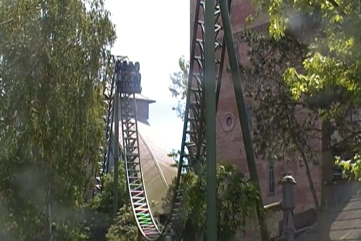
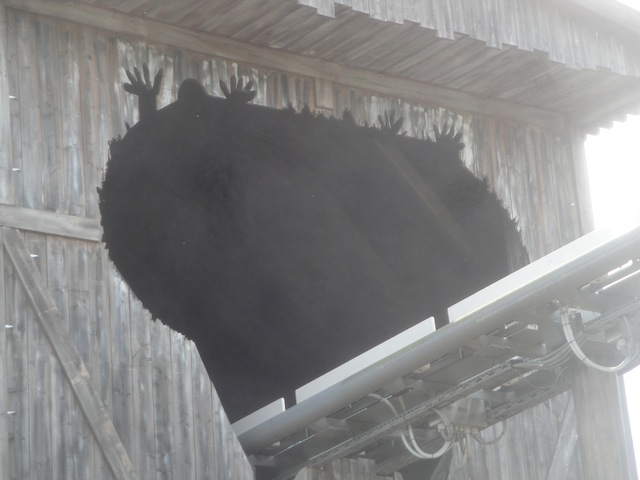

| |
Fluch von Novgorod Review

For today's review, we are heading to Hansa Park to review the parks Euro Fighter, Fluch von Novgorod. Now, this is sort of a hybrid coaster. As this isn't really a true Euro Fighter. It's sort of half Euro Fighter, half Infinity Coaster. Oh, and half dark ride. As yeah. This ride also has a good launched section and also has a lot in common with the Gerslauter Infinity Coasters, such as Lynet. So this ride is in a sense, the best of both worlds. So yeah. Just one of many reasons that this ranks as the best Euro Fighter in the world (at least that I've ridden so far). So let's not waste any more time and conquer this thing. We get in the cars, pull down the restraints, and away we go. We roll to a closed door, wait a little bit, and before you know it, the dark ride section has begun. We come across this sort of...skeleton on a stick amongst all the flashing lights. I don't know what this is. I guess this is supposed to be the curse of Novgorod (Oh, just to let you know. Fluch von Novgorod translates to "Curse of Novgorod" in English). We then roll around, stop at this sort of dead looking guy. But then his ghost comes to life and explains the story to us. And since I don't speak German, I have no idea what the hell he's supposed to be saying. Sorry for sounding ignorant German folks. All I know is that he speaks loudly, pulls out his sword, and dissapears. So I guess this ride is about killing someone by stabbing them. No, this isn't the type of ride where that would work. Try Gouderix for that. We then roll towards this building. There's a fire in front of it, and apparently the Grim Reaper is speaking to us. Oh crap. I think we're dead. Anyways, we roll down a small dip and WHOOSH!!! We begin to launch. If you've never been on this ride, it kind of catches you off guard. And it's a pretty good launch. Far from the best launch, but it really works for the ride. We then head around a sharp right turn and...I SEE THE LIGHT!!! Yep, we turn into the light and head up a nice airtime hill. And let me tell you. Do not understimate this ride. This is STRONG airtime. Real good ejector air. Definetly the best airtime on any of the Eurofighters. It's just a really nice intense pop. Your ass will be out of the seat. We then head into this banked curved hill. It's a curved hill that gets you to change directions. But at the same time, it's banked 90 degrees. So it's just this really fun element that I enjoyed. We then head into this weird sort of...butterfly helix. Sort of. I'm not sure what this is. We head around a curve and into a small spiral drop, then curve back up in the same direction, only to go around another banked turn. It's kind of like a batwing. Only not an inversion and not as intense. But it's a lot of fun. And it looks extremely pretty. I will give it that. We head from that curve into a Zero G Roll. It's a very floaty Zero G Roll. And unlike most Zero G Rolls, you actually feel weightless and upsidedown during this element. WEE!!! We then head around another curve into a brake run as we glide into the shed. Oh, and the tunnel has a mark that looks like the top of riders heads plus their hands. Love that little Wile E. Coyote like touch. We slide into the brake run and stare at something. A vertical lift. Ahh, there's the Eurofighter part of the ride. For a little bit, this just seemed like one of those Gerslauter Infinity coasters. You climb up the lifthill, staring straight at the ceiling. A flash of lightning and thunder appears, and...GOD DAMN IT!!! THE GRIM REAPER IS AFTER US AGAIN!!! Stop trying to kill us dude!!! Anyways, we reach the top, and get yanked down a beyond 90 degree drop. WEE!!!! Love these drops on Eurofighters. We head around a curved hill, and through some stuff in the dark. So I have no idea what it is, but it's fun. And then we head into the brake run. Oh, and I have to admit. The exit of this ride is a freaking maze that even has a slide in it. By far the best exit ever. Yeah. So you can see why I love this ride. Fun beyond vertical drop. Fun launch. Fun dark ride section. Great Theme. Ejector Air. Zero G Roll with a lot of hangtime. It just has so much variety to it, and it is just so much fun. Easily my favorite Euro Fighter. Definetly check it out while at Hansa Park.
8/10
Location: Hansa Park
Opened: 2009
Built by: Gerstlauer
Last Ridden: June 17, 2014
Fluch von Novgorod Photos






Home
|